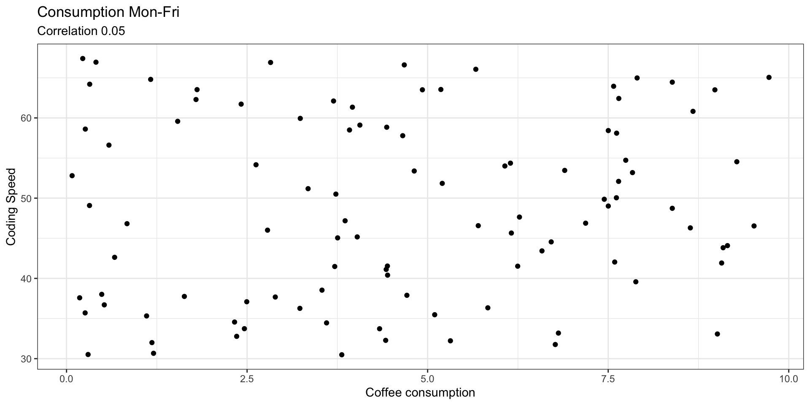
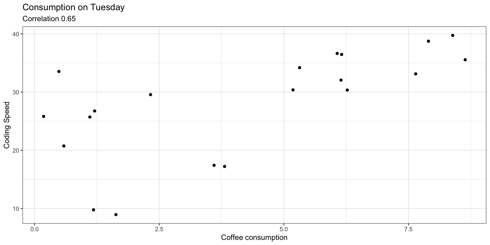

developer day coffee speed
1 A Mon 1.1826393 31.99986
2 A Tue 6.1465536 54.36372
3 A Wed 6.2712994 47.64547
4 A Thu 1.1083892 35.32438
5 A Fri 0.1817871 37.58430
6 B Mon 0.4874006 38.01542
7 B Tue 1.2047659 30.66631
8 B Wed 8.3874461 48.73614
9 B Thu 3.6004177 34.45631
10 B Fri 1.6314185 37.75445Reading and Discussion
Actionable items to modern scientific transparency
Open Science and Reproducibility
Reading
- Title: Seven Easy Steps to Open Science (An annotated reading list)
- Authors: Sophia Cruwell et al.
- Journal: Zeitschrift fur Psychologie, 227(4), 237-248
- Year: 2019
- https://doi.org/10.1027/2151-2604/a000387
Introduction
Why Are We Here?
Current scientific incentive structures are heavily misaligned with transparency.
Standard research practices frequently reward novel, positive results over rigorous, verifiable workflows.
The Solution: Open science is a concrete set of behaviors that protect scientific credibility.
Overview
Step 1: Open Science Core Concepts
The Core Concept
Open science is the process of making both the content and the process of producing scientific evidence fully transparent and accessible.
- Reproducibility Standard: Original data + original code = identical original results.
- Replicability Standard: New data + identical experimental procedures = same findings.
- Targeting Human Bias: Acts as a procedural defense wall against confirmation bias.
- Shifting Metrics: Replaces shallow journal impact factors with actual pipeline audits.
Step 2: Open Access (OA)
🟡 The Gold Route
Works are made immediately and permanently free to the public by the publisher at the point of publication.
🟢 The Green Route
Authors independently self-archive their peer-reviewed manuscripts or preprints in stable public repositories.
- The Citation Boost: OA articles observe an immediate tracking increase in citations between 36% and 600%.
- Automated Audits: Open plain text enables advanced data mining and field-wide meta-research.
Step 3: Open Data, Materials, & Code
# The F.A.I.R. Ingestion Pipeline
data-management:
Findable: Permanent DOI assignment (e.g., via OSF)
Accessible: Unrestricted cloud repository locations
Interoperable: Non-proprietary formats (use .csv, not .xlsx)
Reusable: Comprehensive documentation and read-me file tracking- Data Minimum: Moving away from “trusting” summaries to exposing raw datasets.
- Materials Coverage: Sharing every survey stimulus, software setup, and protocol to reconstruct the timeline.
- Documentation Imperative: Leaving a clean trail so your future self can understand column labels.
- Anonymization: Explicitly mapping exceptions when sensitive files cannot be shared.
Step 4: Reproducible Analyses
- Lab Technique Rule: Computing best practices are as integral to robust research as fundamental laboratory methods.
- The Raw Sanctuary: Save your raw data completely separately from manipulated or cleaned iterations.
- Structural Folders: Maintain isolated directories per project, separating raw data, processed figures, and text scripts.
- Record Everything: Code every step of your analytical data adjustments in open-source scripts (R or Python).
- Stable Archiving: Deploy your finished code blocks to reputable, DOI-issuing hubs like Figshare, Dryad, or Zenodo.
Step 5: Preregistration & Registered Reports
The Core Target Failure
Preregistration draws an unalterable boundary between planned confirmatory tests and unplanned exploratory data mining. It systematically blocks HARKing.
- Pre-Data Lock: Committing to hypotheses and statistical plans before gathering or viewing data files.
- Registered Reports: Submitting your study design to a journal for peer-review prior to data collection.
- In-Principle Acceptance: The journal guarantees publication based on design rigor, completely regardless of the final outcome.
Step 6: Replication Research
- Benchmark of Truth: An effect must be repeatable to count as a genuine scientific discovery.
- Direct Replications: Intentionally duplicating all critical design blocks to verify the physical result.
- Conceptual Replications: Purposefully altering operational variables to test the generalizability of a theory.
- The “Alternative Test” Shift: Re-labeling conceptual replications as alternative tests to stop muddy conflation.
- Systemic Stabilization: Adjusts career environments that unhealthily reward novelty over long-term stability.
Step 7: Teaching Open Science
- The Educational Gap: A vast majority of students currently graduate from statistics courses unaware of the replication crisis.
- The 1-Hour Footprint: Deploying compact, structured introductory modules radically alters how students view media claims.
- The Behavioral Result: Students learn to trust unverified research less, but view computational fields as closer to hard sciences.
- Syllabus Integration: Drastically cut instructor burden by leveraging pre-built infrastructure frameworks like FORRT or the Open Science MOOC.
Activity
Set-Up
- Form groups of 3-4 students.
- Pretend your group is given $1,000 in “Academic Grant Money”
- I will show you a study context.
Study Preregistration
You are going to conduct a study among developers tracking—during a week—their daily coffee consumption and coding speed.
A few data rows shown below.
Study Preregistration
Write down your Null and Alternative hypotheses. In other words, write down what kind of relationship you would expect to see in your study.
02:00
Exploratory Analysis (part I)
Exploratory Analysis (part I)

Exploratory Analysis (part II)
Exploratory Analysis (part II)

Exploratory Analysis (part II)
Developers who drank espresso specifically on Tuesdays coded 40% faster.
Auction
- The prestigious Journal of Caffeinated Studies is accepting submissions.
- But they only publish statistically significant findings.
- You must “bid” your grant money to publish.
Stick to your original hypotheses
Decide to HARK on the “Tuesday Espresso” anomaly
02:00
BTW
The “Tuesday Espresso” spike is actually just a noise artifact.
If you spent your money to publish it, you just committed a massive, irreproducible false-positive sin 🤭
Poll & Quiz
Poll
Rate your level of agreement with this statement:
A junior researcher has a moral obligation to release their raw data under a CC0 (Public Domain) license, even if an outside lab can use it to scoop their next publication.
- Strongly Disagree (Code or nothing)
- Disagree
- Neutral
- Agree
- Strongly Agree (Spreadsheets are essential)
Poll
Where does the majority of true, groundbreaking scientific progress actually happen?
Purely Confirmatory: Following a rigid, preregistered blueprint flawlessly to eliminate human bias.
Purely Exploratory: Wandering through the data landscape, discovering unexpected patterns by accident.
Mostly Confirmatory, but keeping a hidden “sandbox” for post hoc visual data exploration.
They are completely equal, and separating them into strict categories hurts the scientific mind.
Poll
Imagine you are in charge of a federal funding agency that has to allocate a limited tax-payer budget.
You have $10,000,000 in federal grant money to stabilize an irreproducible field. How do you split your funding?
100% to Direct Replications: We must verify if the original computer code and methods are rock-solid first.
100% to Alternative Tests (Conceptual): We must verify if the underlying scientific theory actually applies to different real-world scenarios.
50/50 Split: Balance code verification with conceptual generalizability.
0% to Replication: Spend it all on funding completely brand-new, novel discoveries instead.
Poll
If you were forced to align your upcoming research career with one of these two profiles right now, which one describes you?
Career Pragmatist
My priority is survival, secure funding, and graduation. I will adopt open-science tools only if they don’t slow down my publishing timeline or put my project at risk of being scooped
Open-Science Idealist
My priority is absolute scientific truth and provenance. I would rather delay a publication, or release my raw data under a CC0 license if it means my pipeline is perfectly transparent
If you had to choose one of the positions, which one would you choose?
Chafa Stuff
Shifting from Trust to Transparency
INSERT IMAGE OF TRUST FALL
The Ultimate Scientific Standard
- Slide Title: Open Science: Redefining How We Know What Is True
- Visual Anchor: A split screen showing a newspaper headline of a flashy “scientific discovery” on one side, and a complex flowchart of code/data on the other.
- Core Concepts:
- The Baseline: Replication is the ultimate standard of scientific truth (Seven_easy… p. 3).
- The Problem: In complex, data-heavy modern science, full replication is often incredibly expensive, time-consuming, or physically impossible (Seven_easy… p. 3).
- The Solution: Open Science bridges the gap by making the internal process visible (Seven_easy… pp. 1, 3).
The Credibility Revolution & Its Threats
- Visual Anchor: A simplified reproduction of Figure 1 (Threats to reproducible science) from the paper (Seven_easy… p. 3).
- Core Concepts:
- Publication Bias: Journals reward clean, positive headlines; null/negative results get locked away in the “file drawer” (Seven_easy… p. 3).
- P-Hacking & HARKing: Subconsciously or consciously manipulating statistical models or changing hypotheses after looking at the data to fit a narrative (Seven_easy… p. 3).
- The Crisis Metric: Estimates suggest a staggering amount of published literature in fields like psychology and biology struggles to replicate (Seven_easy… p. 1).
Open Science is a Set of Behaviors
Step 1: Open Access (Green vs. Gold) (Seven_easy… pp. 3-4)
Step 2: Open Data, Materials, & Code (Seven_easy… pp. 1, 4)
Step 3: Reproducible Computing Workflows (Seven_easy… pp. 1, 5)
Step 4: Preregistration & Registered Reports (Seven_easy… pp. 1, 6-7)
Step 5: Replication Tracking (Seven_easy… pp. 1, 7)
Open Science is not an “all-or-nothing” bureaucratic pass/fail checklist
It is a fluid spectrum of behaviors that you build into your daily research stack (Seven_easy… pp. 1-3).
The Selfish Return on Investment (ROI)
Visual Anchor: A graphic balancing an “Academic Reputation Shield” against a “Time Tracker” showing hours saved.
Computational Insurance: Flawless file management keeps raw data safe from corruptions that cause high-profile retractions (Seven_easy… p. 5).
The Citation Magnet: Openly sharing code and data means your work is trusted and cited significantly more by peers (Seven_easy… pp. 4-5).
Future-Self Empathy: Writing “executable descriptions” (clean scripts) means you can rerun your own work six months from now without crying (Seven_easy… p. 5).
The Challenge & Handoff
- Transitioning from Consumers to Auditors
- Visual Anchor: A bold text callout reading: “Data is Cheap. Time is Expensive.” (Seven_easy… pp. 5-6)
- The goal of this lecture block is to learn how to actively audit research, not just passively read it (Seven_easy… pp. 1, 8).
- Setting up the rules of the upcoming classroom debate and scenario challenges.
Reflection Points
Reflections
- Step 1 (Open Science Overview): Is open science a rigid set of bureaucratic rules you must pass, or is it a fluid collection of daily behaviors you choose to practice (Seven_easy… p. 2)?
- Step 2 (Open Access): If a university library pays millions for journal access while low-income global scholars are locked out, who actually owns the knowledge produced by public funds (Seven_easy… p. 4)?
- Step 3 (Open Data & Code): If you claim your data is available ‘upon reasonable request’ but you ignore peer emails five years later, did you actually share your data (Seven_easy… p. 4)?
Reflections
- Step 4 (Reproducible Analyses): If a peer uses your exact dataset but has to manually guess how you clicked your way through an SPSS or Excel menu, is your science truly transparent (Seven_easy… pp. 5-6)?
- Step 5 (Preregistration): Why do human brains naturally look at accidental patterns in random noise and confidently declare: ‘I knew that would happen all along’ (Seven_easy… p. 6)?
- Step 6 (Replication Research): Why does the modern academic system celebrate an unverified, flashy headline over a quiet, rock-solid verification study (Seven_easy… pp. 3, 7)?